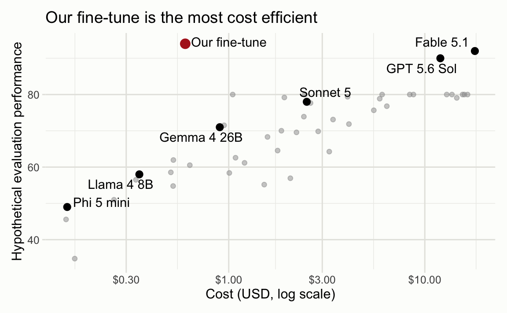

I’ve seen a line of reasoning quite a bit recently online and in calls with users that goes something like this:
- There’s some task that needs to be done regularly.
- Today’s frontier models can do it quite reliably, but the bill is starting to rack up.
- Cheaper models can’t quite do so reliably, but a fine-tuned variant of a small, open-weights model (which is just as cheap as the model it seems comparable to) might be able to.
- You should fine-tune models for tasks that your organization does.
I’ve seen a number of blog posts cited in support of this idea.
I understand the appeal here; AI is getting expensive, many players in the space cannot make the privacy guarantees we’d hope, and proprietary models that we rely on go away when newer releases come out. That said, my reaction is that this approach seems more engineering-intensive and, likely, more expensive than alternative approaches. I’ll try to make that case here.
Note
When I say you probably don’t want to fine-tune, I mean that I totally understand there are some valid use cases here. Some of the linked blog posts are themselves valid cases. I can see fine tuning making sense for some very high-volume workloads and/or for asynchronous workloads (where it doesn’t matter if a response comes back in a second or a day).
What is fine tuning?
Before we go further, it’s probably worth quickly outlining what I mean by fine tuning.
Large language models are huge arrays of numbers. Input, usually in the form of text, is turned into arrays of numbers, and then those arrays get multiplied a bunch of times to form the output, also usually in the form of text. Those multiplications are quite computationally intensive, and the big array of numbers itself is quite large. For example, the smallest models that are beginning to be able to reliably complete basic agentic work contain 8 billion numbers (in short, “8B”). Loosely, you can think of the number of billions of parameters as the number of gigabytes of memory you’d need to run the model.1 So, a laptop with 16GB of RAM could comfortably run a 8B model as-is. In order to run the 8B model, you’d need to download that model from a repository like Hugging Face.
Fine tuning is a process by which one can alter the behavior of the matrices, either by changing the numbers themselves or by injecting intermediate calculations. The goal of fine-tuning is, broadly, to increase the performance of a model on a given task while minimizing the impact on the model’s ability to do other tasks. Fine tuning approaches that change the numbers themselves, or “full fine-tunes,” mean that the whole model is altered. If you’d like to use a full fine-tune of a 4B model, you’re downloading a whole, fresh version of the model. Full fine-tunes are more computationally intensive to train and can learn harder tasks, but the unrestricted weight updates make them more prone to losing general capabilities. (Note that, broadly, the utility of LLMs is that they are remarkably general. For example, let’s say you want your fine-tune to classify insurance claims based on free text data. In order to do that, the model needs to demonstrate a vast array of capabilities that you might not think to explicitly train for. For example, the model should be able to notice when various accounts of some event seem to conflict on timeline. When models appear to gain some ability while losing too much of its broad intelligence, this is called overfitting, catastrophic forgetting specifically in the context of LLMs, or, more colloquially, overcooking the model.) This is in contrast to fine tuning approaches that only inject intermediate calculations, usually referring to low-rank adaptations (or LoRA fine-tunes). LoRA is probably the most common way to fine-tune a model. It’s less computationally expensive to train a LoRA, though a LoRA cannot alter behavior as broadly (bad for learning new capabilities, good for preventing overfitting). For example, a fine-tune of a 8B model could be on the order of tens of megabytes. If you have the ~8GB weights of that 8B model on your laptop already, you could feasibly download just those additional 20MB and be on your way.
Fine tuning is hard
The process to fine-tune a model is roughly similar to the process of training the model in the first place. You have some intermediate draft of a model, and you throw a bunch of data at it. As the model sees more and more data, the weights get nudged in one direction or another that results in lower “loss.” Lower loss means better performance.
It is very, very difficult to successfully fine-tune a model. I don’t claim that it’s impossible, but it is a substantial engineering effort, requiring the careful attention of dedicated scientists with access to today’s frontier models across several weeks, just for the first edition of the model. To show why, let’s revisit each step of that process.
What model should you start with? In short, you want the smallest possible model that has the ability to learn to do the task reliably while retaining sufficient general intelligence. It is very hard to predict when or how capabilities will emerge during fine tuning without first fine tuning, meaning that the choice will need to be revisited several times once you’ve made a first go at the remaining steps.
What data gets used for training? Once you’ve chosen a model, you need to find some training data to fine-tune it with. What should you use? Ideally, you would use the real thing. What inputs does the human or the frontier model actually see when they do the task IRL? What conclusions do they come to? This approach is usually not suitable from a privacy perspective; in order to train on that data, you’d need consent to train on it, and you likely don’t have it. In the cases that you do have consent and choose to train on that data, you now have a mandate not to overfit; in other words, if the model you’re fine tuning internalizes the data you’re training on and is able to (even hazily) recollect it, you’ve now exposed that data to any users of the model.
The other approach, then, is synthetic data. In short, you could have a model that is able to do the task generate a bunch of scenarios that resemble the real inputs and then demonstrate how to carry out the task on those inputs. The issue with this is that this synthetic data is ‘collapsed’: in other words, the distribution of weird things happening in those synthetic inputs will be much narrower than what we actually see in real life. An example that demonstrates this really well is the Elias in the Lighthouse effect. A wide variety of models will, when asked to write a story, write about a lighthouse keeper named Elias Thorne. On its own, the story of Elias Thorne might be compelling. However, 1,000 stories about a lighthouse keeper Elias Thorne are not. In the same way, when asked to create 1,000 synthetic inputs to some task, that distribution of inputs created by a frontier model will have its own set of tics that are unrepresentative of real-world data. This means that a model fine-tuned on those 1,000 synthetic inputs might learn how to carry out the task when it looks like how the frontier model simulates it, but not actually reliably do the real thing.
How do you nudge the weights? Assuming that you have a diverse set of training data to work with, you’ll now need to decide, mechanistically, how to change the behavior of the model. Do you need a full fine-tune or will a LoRA be sufficient? In either case, there are 5 or 10 important parameters that you’ll need to choose the values of. Without deep expertise in training LLMs, you’ll probably be quite far off in your first guess on those numbers (though a careful exchange with a frontier LLM can help). Notably, they are hyperparameters, meaning that there is no generally good “magic number” for those parameters, and instead you’ll need to try a bunch and see what works. You’d make some guess, see what happens, then generate some hypotheses on what a given change to those parameters might do, then try out a different number and see if it has the desired effect. Every time you’re figuring out what to try next, you’ll be reading a ton of test cases and trying to observe general failure modes exhibited in this intermediate draft of your fine-tuned model. That might change the initial choice of model you’re fine-tuning, and it might change which subsets of the training data you’re exposing to the training process.
How do you define loss? I said above that you’d be reading a bunch of these example cases. In reality, though, you want some number that can be computed deterministically (or with the help of a frontier LLM) that well-describes what your reaction will be when you read the output. What’s a good output? What’s a bad output? In supervised fine tuning runs, the thing that actually determines how the weights get nudged is a simple, token-by-token comparison of the words that the model you’re training chose vs. some desired target. For output types that are free text, this is especially tricky to get right, because two outputs that mean the same thing can look quite different syntactically. Because of this, you’ll probably want an LLM-as-a-judge system, which can compare an output against a target and grade it according to some rubric you’ve defined in plain language. LLM-as-a-judge systems are themselves quite hard to design correctly, and you’ll be reading a bunch of that judge’s grading transcripts, too.
Regarding loss and evals, as well, it feels worth mentioning that getting your fine-tuned model to score well on your own benchmark is not the hard part. Many of these fine-tuning writeups include a plot along these lines:
When I see that a single-digit-billion-parameter fine-tuned model scores better than Fable 5.1 or GPT 5.6 Sol on an evaluation, I interpret that as evidence that the evaluation is not meaningful. In my own experience, it is not (comparatively) hard to get a small model to score very well on any given benchmark. What’s much more difficult is preserving the broad intelligence of a model while driving the evaluation score up. A meaningful evaluation can do both at once, measuring task performance under a realistic, broad distribution of possible task configurations. It is very hard to author meaningful evaluations, especially for models as capable as those that exist today.
Suppose, though, that you end up finding a good model to start from and a good set of parameters and a diverse set of training data that you’ve obtained consent to train on and have found a way to measure your progress that meaningfully speaks to the broad distribution of situations that your model will see in the wild. Now, it’s time to put it in production.
Fine tuning is expensive
It only costs a few dollars to run one fine tuning run of a relatively low-rank LoRA of a, say, 8B model on 1,000 samples. Even a larger-rank fine-tune of a model in the tens of billions of parameters on a bunch of task-specific data is a few hundred dollars. (Various technical details might mean this is an order of magnitude or two off. Regardless, the larger point stands that a single fine tuning run is not the expensive part of deploying a fine-tuned model.)
It is likely much more expensive to get such a model deployed, doing the task you trained it to do.
…because hosting is expensive
Hosting a model yourself is expensive compared to using a similarly capable model hosted by someone else unless you have extraordinary volume. (Unlike a general hosted model, you cannot submit requests to your custom weights and pay only per token.2)
This data isn’t actually public, but it’s widely believed that Anthropic and OpenAI make margins on the order of tens of percent for the models that they serve. They serve extraordinarily large volumes; their compute is near max capacity almost always. Further, extraordinarily smart people are working very hard to serve these models as efficiently as possible. (If you don’t believe me, read this DeepSeek paper or this one.) In short, the organizations that are serving frontier models are very good at doing so and are thus doing so very efficiently. And they are making margins on the order of tens of percent. So, in order to be competitive on price compared to buying the tokens from someone else, let’s say you’d need to be at worst half as good at the frontier labs at serving your own workload. It is very hard to serve similarly-valuable tokens this cheaply.
Just as an example, let’s say I host 8-bit Gemma 4 26B A4B on a single H100. I can rent a high-availability H100 GPU instance at $0.0833 a minute, or $44,000 a year. Further, let’s say that the workload is a coding agent like Claude Code; 90% of tokens are cached input, 9% of tokens are uncached input, and 1% of tokens are output.
Sonnet 5 is $2 per million tokens input, a tenth of that for cached input tokens, and $10 per million output tokens. At that cost, I could buy ~96 billion tokens.
So, for the cost to be equivalent to 1) self-host this 26B A4B fine-tune and 2) just route all of the requests to Sonnet instead—a much more capable model and likely much larger by number of parameters—we’d need to serve 182,000 tokens per minute 24/7 through the year.
It is quite easy3 to serve that mixture of 182,000 tokens in a minute with open source libraries. However, assuming this model is fine-tuned to do a specific task, there must be sufficient demand for that task specifically to actually rack up that many tokens. Further, the demand needs to be relatively smooth. One could easily serve 10 times as many tokens in a minute at peak. If you’ve rented that H100 24/7, though, you’re paying for the idle moments, too. The average would need to meet that threshold over time, and the peaks also can’t be too intense, or else you’ll need to rent a second H100 (or accept that users will experience downtime at peak hours).
You could make the argument that some tasks only require the fine-tuned model to be live for 10 minutes a day or something and then the math gets easier. I’d argue that very few real-world tasks actually fit this paradigm.
Note
I’m not arguing against self-hosting in general. Self-hosting (either literally on your organization’s own hardware or by renting hardware and serving open-weights models on it with open source software) can be quite cost-effective at sufficient scale. If you know that a lot of traffic will go through that endpoint, do the napkin math like that above and see if you can save some money. What I’m particularly arguing against is that it’s a good idea to self-host a model that can only do one thing. Unless you serve an extraordinary amount of traffic that does that task specifically, the payoff is not there.
It’s also worth saying that a model that can serve a bunch of traffic behind a single H100 is a very small model. Composer 2.5 is a Kimi 2.5 checkpoint, so 1T A32B. The GPU cluster required to serve that model is more than an order of magnitude more expensive to rent (and the Cursor team is only able to do so because they serve a very large user base).
…and you must host
The other suggestion here is that, if the model is small enough, users who need to do the task can just download the weights and run it on their laptop or a dedicated workstation.
The effectiveness of this argument depends on the kind of task to be done. However, it’s worth considering the potential for this to be a very unpleasant user experience compared to just using a model that someone else hosts. For example, let’s say my colleague does some task for an hour every week and there’s some model small enough to run on my laptop that’s capable of doing the task. In order to use the model for that task, my colleague would need to download the 4GB or 8GB or 100GB or whatever of weights. That user would also need to be capable of (and willing to) configure the serving of the model, and they’d need to make that happen every time they started the task. If that model was accessed through a tool that the user was using regularly anyway—Claude Code pointed at a local ollama model, for instance—they’d need to remember to switch the model over in the application’s settings. If that model was accessed through a different interface, the user would need to use a different interface than they normally use LLMs with for that task specifically. Neither of these are good UX.
Even if the software for locally serving models got much more pleasant than it currently is, it’s hard to compete with the experience of pay-as-you-go for the Everything Tool that wraps the Everything Model.
Your fine-tune will quickly fall behind
Let’s say you successfully fine-tune a model based on some fictional model Kuen 3. Then, the following week, Kuen 3.5 is released. 3 of the 100 most capable LLM scientists on this planet worked on it. It’s almost as good as your fine-tune on that specific task, and it’s also broadly capable at a very broad array of tasks.
Fine tuning is not a boat that is lifted by the rising tide of broader AI progress—in order to take advantage of the Kuen 3.5 release with your fine-tune, you’d need to restart that process of choosing parameters and observing fine tuning runs. The underlying architecture of the model may have changed, and thus the approaches that you used to fine-tune Kuen 3 might not work for Kuen 3.5 on your first try.
What you should do instead
The boat that is lifted by a rising tide in this context is plain old prompt engineering. (POPE, as Joe Cheng calls it.) Choose a model that’s available to you, that fits your price point, and seems broadly capable across a wide variety of public benchmarks. (Extra points if the vibes on the model from people you trust are good, and extra points if someone else is serving it.) Put together a short prompt telling the model how to do the task, perhaps inside of some coding agent harness like Claude Code (or, hey, Posit Assistant), and see what it does. Adjust the prompt to tell it how to do things correctly that it tends to trip up on, and iterate from there. If you’ve already put together an evaluation as part of your fine tuning process, you could even reuse that to measure the effects of changes in your prompt! My colleague Sara and I have written about prompt engineering in the past if you’re interested in learning more, once about the more specific task of POPE for teaching LLMs about R packages but in relatively generalizable ways, and once focused on deciding between the popular ways to deliver context to coding agents.
This might seem in contradiction with my earlier characterization:
Cheaper models can’t quite do so reliably, but a fine-tuned variant of a small, open-weights model (which is just as cheap as the model it seems comparable to) might be able to.
I said that cheaper models couldn’t do so reliably already. How could prompting alone make that change? Two thoughts here:
- Consider the amount of time and money you spend iterating on a prompt and model selection in comparison to the time it takes to fine-tune a model. You could spend days iterating on the prompt and still have saved time and money.
- LLMs are advancing remarkably quickly. Notably, the intelligence per parameter is progressing quickly, meaning that you can fit comparatively more intelligence in a smaller model. In April, I wrote about how, 4 months prior, no model smaller than 35B could complete a simple agentic coding task a single time out of ten. Then, in April, Qwen 3.5 35B A3B and Gemma 4 26B A4B both completed the task successfully nine times out of ten. Yesterday, I shared that an 8B model completed the task successfully 8 times out of ten. In short, one ought not to hold on to their beliefs about model capabilities too long. If you haven’t checked out model releases from the last month, try to prompt engineer with them for a bit and see if the rising tide has made your use case possible.
Footnotes
This is the case if the model is quantized to 8-bit. 16-bit is a common higher-precision setting, 4-bit and even smaller are common.↩︎
Per-token fine-tune hosting has been tried and largely abandoned: Together AI announced serverless multi-LoRA serving in 2024 only to discontinue it later, and Fireworks has never supported serverless LoRA deployments.↩︎
Sorry for saying “easy” here. By easy, I mean easy relative to other tasks that need to get done.↩︎